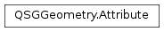

QSGGeometry.Attribute¶
Synopsis¶
Static functions¶
- def
create(pos, tupleSize, primitiveType[, isPosition=false]) - def
createWithAttributeType(pos, tupleSize, primitiveType, attributeType)
Detailed Description¶
The
QSGGeometry.Attributedescribes a single vertex attribute in aPySide2.QtQuick.QSGGeometryThe
QSGGeometry.Attributestruct describes the attribute register position, the size of the attribute tuple and the attribute type.It also contains a hint to the renderer if this attribute is the attribute describing the position. The scene graph renderer may use this information to perform optimizations.
It contains a number of bits which are reserved for future use.
See also
-
class
PySide2.QtQuick.QSGGeometry.Attribute¶ -
class
PySide2.QtQuick.QSGGeometry.Attribute(Attribute) Parameters: Attribute – PySide2.QtQuick.QSGGeometry::Attribute
-
PySide2.QtQuick.QSGGeometry.Attribute.position¶
-
PySide2.QtQuick.QSGGeometry.Attribute.tupleSize¶
-
PySide2.QtQuick.QSGGeometry.Attribute.type¶
-
PySide2.QtQuick.QSGGeometry.Attribute.isVertexCoordinate¶
-
PySide2.QtQuick.QSGGeometry.Attribute.attributeType¶
-
PySide2.QtQuick.QSGGeometry.Attribute.reserved¶
-
static
PySide2.QtQuick.QSGGeometry.Attribute.create(pos, tupleSize, primitiveType[, isPosition=false])¶ Parameters: - pos –
PySide2.QtCore.int - tupleSize –
PySide2.QtCore.int - primitiveType –
PySide2.QtCore.int - isPosition –
PySide2.QtCore.bool
Return type: PySide2.QtQuick.QSGGeometry::AttributeCreates a new
QSGGeometry.Attributefor attribute registerposwithtupleSize. TheprimitiveTypecan be any of the supported types fromQSGGeometry.Type, such asQSGGeometry.FloatTypeorQSGGeometry.UnsignedByteType.If the attribute describes the position for the vertex, the
isPositionhint should be set totrue. The scene graph renderer may use this information to perform optimizations.Note
Scene graph backends for APIs other than OpenGL may require an accurate description of attributes’ usage, and therefore it is recommended to use
PySide2.QtQuick.QSGGeometry::Attribute.createWithAttributeType()instead.Use the create function to construct the attribute, rather than an initialization list, to ensure that all fields are initialized.
- pos –
-
static
PySide2.QtQuick.QSGGeometry.Attribute.createWithAttributeType(pos, tupleSize, primitiveType, attributeType)¶ Parameters: - pos –
PySide2.QtCore.int - tupleSize –
PySide2.QtCore.int - primitiveType –
PySide2.QtCore.int - attributeType –
PySide2.QtQuick.QSGGeometry.AttributeType
Return type: PySide2.QtQuick.QSGGeometry::AttributeCreates a new
QSGGeometry.Attributefor attribute registerposwithtupleSize. TheprimitiveTypecan be any of the supported types fromQSGGeometry.Type, such asQSGGeometry.FloatTypeorQSGGeometry.UnsignedByteType.attributeTypedescribes the intended use of the attribute.Use the create function to construct the attribute, rather than an initialization list, to ensure that all fields are initialized.
- pos –
© 2018 The Qt Company Ltd. Documentation contributions included herein are the copyrights of their respective owners. The documentation provided herein is licensed under the terms of the GNU Free Documentation License version 1.3 as published by the Free Software Foundation. Qt and respective logos are trademarks of The Qt Company Ltd. in Finland and/or other countries worldwide. All other trademarks are property of their respective owners.